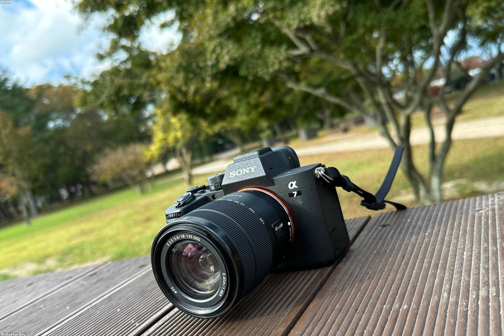
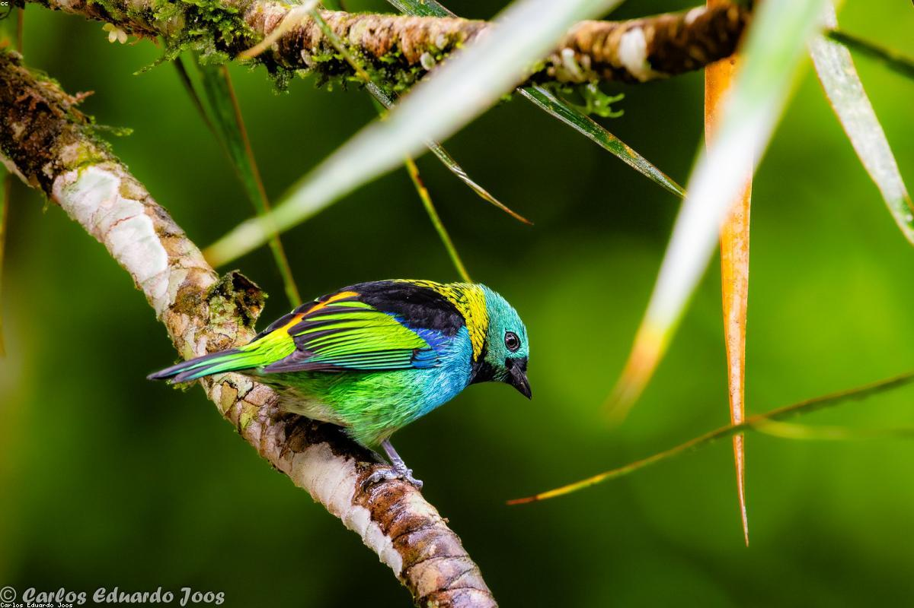

Option 1Fujifilm X-S20
Best for color science and battery life
7-stop IBIS
For a travel photographer needing portability without sacrificing stability, the best options released between 2020 and 2023 are the Fujifilm X-S20, Sony a6700, and OM System OM-5. These models specifically address your need for In-Body Image Stabilization (IBIS) in a chassis under 500g, while offering distinct advantages in lens ecosystems and color science.
Criteria and Pricing Context
The recommendations below adhere strictly to your budget cap of $1,500 USD and weight limit of 500g (body including battery). Prices listed are approximate body-only retail prices as of late 2023/early 2024.
Recommended Models
Technical Specifications Table
| Feature | Fujifilm X-S20 | Sony a6700 | OM System OM-5 |
|---|---|---|---|
| Release Year | May 2023 | July 2023 | Oct 2022 |
| Sensor Size | APS-C (26MP) | APS-C (26MP) | Micro 4/3 (20MP) |
| Weight (Body) | ~491g | ~493g | ~414g |
| Est. Price | ~$1,299 | ~$1,398 | ~$1,199 |
| Lens Mount | Fuji X Mount | Sony E-Mount | Micro Four Thirds |
| IBIS Rating | Up to 7.0 stops | Up to 5.0 stops | Up to 7.5 stops |
Best for color science and battery life
7-stop IBIS
Best for autofocus and lens selection
AI-driven Subject Tracking
Best for durability and compactness
IP53 Weather Sealing
1. Fujifilm X-S20 Official Specifications
2. Sony a6700 Product Page
3. OM System OM-5 Overview


 Camera
Camera Weight
Weight StabilizationIcon Camera
StabilizationIcon Camera Icon Camera Video
Icon Camera Video